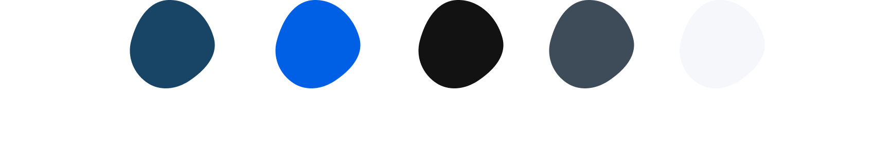
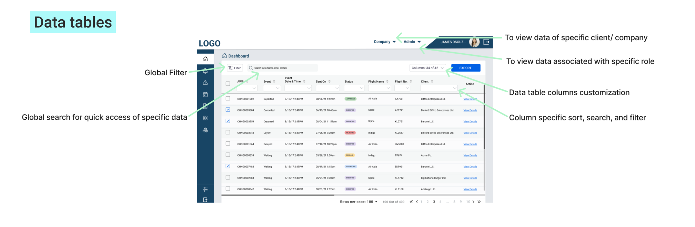
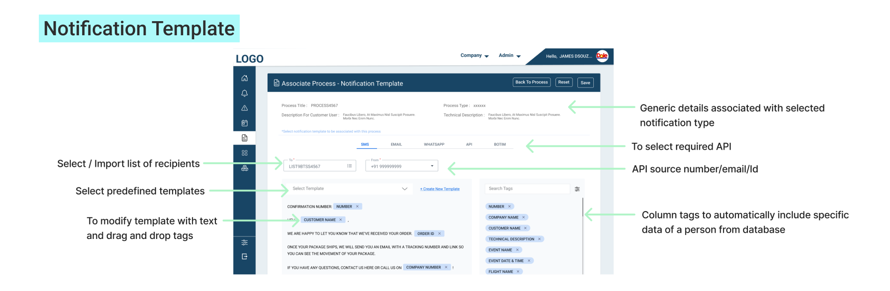
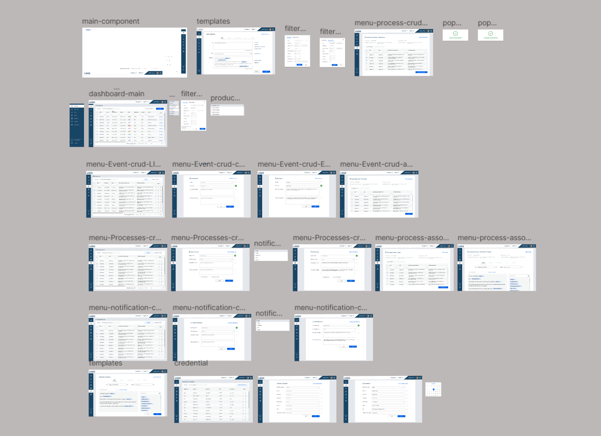
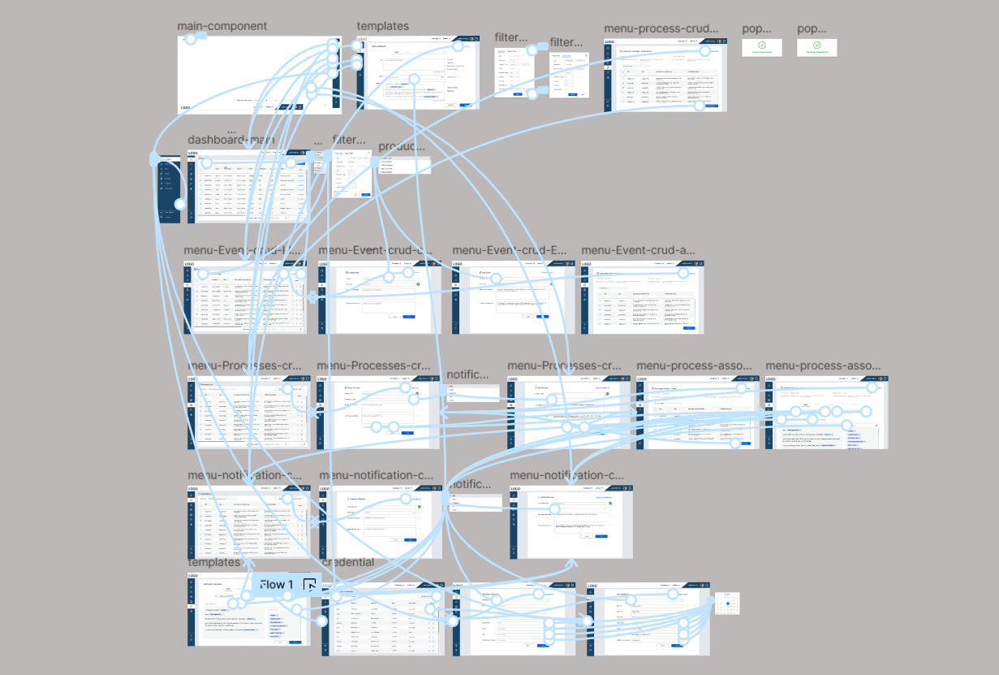

The Problem
Logistics companies struggle with overwhelming databases and inefficient communication systems. Heavy data volumes make it difficult for employees to efficiently access, sort, and use critical information, while lack of real-time notifications leads to operational delays and communication gaps.
The Solution
I designed a comprehensive desktop application with advanced data visualization tables, robust filtering and sorting capabilities, and a template-based notification module. The solution enables easy database navigation and real-time communication, significantly improving operational efficiency.
Key Challenges Identified
- Database Navigation: Heavy databases with complex data structures made it challenging for employees to efficiently find and access needed information
- Data Organization: Lack of effective filtering and sorting capabilities hindered productivity and decision-making
- Communication Gaps: Absence of real-time notification system led to delays in critical operational updates
- User-Specific Needs: Different user roles required different views and access to various data sets
- Bulk Operations: Need for efficient bulk messaging and notification management for multiple users
Project Context
Logistics operations involve complex processes including order processing, warehousing, picking, packing, and shipping. Companies in this industry manage massive databases containing inventory information, order details, shipping schedules, and customer data. The challenge was to design an interface that simplifies access to these heavy databases while ensuring real-time communication across all operational levels. I collaborated closely with business analysts and technical leads to understand the specific needs of different user roles and create a solution that enhances productivity and operational efficiency.
Domain Research & Industry Analysis
Comprehensive research into the logistics industry revealed key technological trends and operational challenges that informed the design approach.
Industry Overview
Technological advancements have transformed logistics operations, improving efficiency, reducing costs, and increasing transparency. Technology integration is now essential across all logistics processes, from warehouse management to last-mile delivery.
Technology Trends
Key technologies include IoT for real-time tracking, AI/ML for route optimization, blockchain for secure transactions, RPA for warehouse automation, and autonomous vehicles for delivery. These innovations set the foundation for modern logistics platforms.
Market Adoption
Technology adoption varies by region and industry segment. North America and Europe lead in autonomous vehicles, while Asia-Pacific shows strong growth in IoT and blockchain applications for supply chain management.
Design Implications
Modern logistics dashboards must support data visualization, real-time updates, multi-user collaboration, and integration with various technologies. The interface should be scalable, intuitive, and adaptable to different operational needs.
Research Insights
- Data Volume Challenge: Logistics companies manage millions of data points daily, requiring efficient visualization and filtering systems
- Real-Time Needs: Operations depend on real-time information for inventory management, shipping updates, and exception handling
- User Diversity: Different roles (warehouse managers, dispatchers, administrators) need customized views and access levels
- Communication Critical: Effective notification systems are essential for coordinating complex multi-step operations
- Scalability Requirement: Systems must handle growing data volumes and increasing user bases without performance degradation
Design Solution & Approach
Core Features & Workflow
Data Visualization
Advanced data tables for managing large volumes of logistics data
Filter & Sort
Robust filtering and sorting capabilities for quick data access
Notifications
Real-time notification module with bulk messaging capabilities
Templates
Template-based notifications for streamlined communication
User-Specific
Customized views and access levels for different user roles
Design Principles Applied
- Data-First Design: Prioritized clear data visualization and organization for complex information
- Efficiency Focus: Minimized clicks and steps required to access critical information
- Scalability: Designed interfaces that handle growing data volumes without cluttering
- Real-Time Updates: Integrated notification systems that keep users informed instantly
- Role-Based Customization: Created flexible views adaptable to different user needs
Design Process
The design process involved extensive collaboration with business analysts and technical leads to ensure the solution addressed real operational needs while remaining technically feasible.
Color Palette
Wireframes - Initial Concepts
 Wireframing Approach
- Information Architecture: Organized complex data structures into logical sections and hierarchies
- Navigation Design: Created intuitive navigation patterns for accessing different data sets and features
- Data Table Design: Designed efficient table layouts with inline filtering and sorting options
- Notification System: Planned notification module with user-specific targeting and template management
- Dashboard Layout: Structured main dashboard for quick access to most frequently used features
Final Design & Implementation
The final design combines efficient data management with user-friendly interfaces, enabling logistics teams to manage complex operations seamlessly.
Design Screens
Prototype Screens
Expected Impact & Benefits
The redesigned logistics dashboard addresses key operational challenges and delivers measurable improvements across critical metrics.
Business Benefits
- Streamlined database navigation enables faster decision-making and operational response
- Advanced filtering and sorting capabilities reduce time spent searching for critical information
- Real-time notification system improves coordination and reduces communication delays
- Template-based notifications enable efficient bulk communication to multiple stakeholders
- User-specific views enhance productivity by showing relevant information for each role
- Improved data organization reduces errors and enhances operational accuracy
Key Learnings & Success Factors
Design Insights
- Data Visualization Matters: Effective data tables with advanced filtering are crucial for managing complex databases
- Real-Time Communication: Notification systems are essential for coordinating complex logistics operations
- User-Centric Approach: Understanding different user roles and their specific needs drives better solutions
- Collaboration is Key: Working closely with business analysts ensures solutions address real operational needs
What Made This Project Successful
- Domain Research: Thorough industry research provided valuable insights into logistics operations
- Stakeholder Collaboration: Close collaboration with business analysts and technical leads ensured feasibility
- Iterative Design: Multiple wireframe iterations refined the solution to meet complex requirements
- Scalable Solutions: Designed interfaces that can handle growing data volumes and user bases
Design Process Gallery
A comprehensive view of the design process, from initial wireframes to final high-fidelity prototypes.
Looking Forward
This project demonstrated how thoughtful UX design combined with deep domain research can solve complex enterprise challenges. The data visualization and notification system solutions provide a foundation for scalable logistics management platforms that can adapt to evolving operational needs.
Future enhancements could include AI-powered data insights, predictive analytics for inventory management, and enhanced mobile access for field operations.